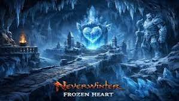

DUNGEON MECHANICS
THE FROZEN HEART
Break the ice. Avoid the explosions. Try not to become a frozen ornament.

OVERVIEW
THE FROZEN HEART
The Frozen Heart has three main boss encounters. Ice crystals, exploding golems and damaging ground effects are the main mechanics to watch throughout the dungeon.
BOSS ONE
ICE & CRYSTALS
- The boss summons additional enemies throughout the fight.
- During the encounter the boss becomes entombed in ice and cannot be attacked normally.
- When this happens, locate and destroy the crystal or orb controlling the ice.
- Destroying the orb releases the boss and allows the group to continue damaging him.
- This mechanic occurs twice, with the group moving to the next area to destroy the second orb.
- Ice golems near the objectives can freeze players who remain too close to them.
- Once both orbs have been destroyed, the boss will no longer entomb himself and can be finished normally.
THROUGHOUT THE DUNGEON
ICE GOLEMS
- Ice golems appear throughout the dungeon.
- When an ice golem dies, it explodes and can freeze players caught inside the area.
- Move away from dying golems rather than remaining beside them.
DUNGEON MECHANIC
BREAKING THE ICE WALL
- An ice wall blocks progression through part of the dungeon.
- Pick up the nearby pickaxe.
- Use the pickaxe on the ice wall until the wall is destroyed.
- Once the wall breaks, continue toward the second boss.
BOSS TWO
WINTERFORGED GOLEM
- The Winterforged Golem uses a jumping attack during the encounter.
- Damaging ice appears on the ground and deals damage over time to anyone standing inside it.
- Move out of the ice immediately rather than attempting to fight through the damage.
- Winter wolves are summoned during the fight.
- Control or kill the additional enemies while continuing to damage the boss.
BEFORE THE FINAL BOSS
DESTROY THE CRYSTALS
- Three crystals must be destroyed before the final boss encounter.
- Each crystal is guarded by a group of enemies.
- Clear the enemies and destroy each crystal before moving to the next.
- Once all three have been destroyed, continue to the final encounter.
FINAL BOSS
FROST GIANT CHIEFTAIN
- Watch for red damaging areas appearing on the ground throughout the fight.
- Move out of the red areas immediately.
- The boss uses heavy attacks capable of knocking players over.
- Tanks should block or mitigate the boss's direct attacks where possible.
- Additional goblins and ice golems spawn during the fight.
- Remember that ice golems explode when killed and can freeze nearby players.
- If a damaging red area targets you, move it away from the rest of the group before leaving the affected area.
QUICK REFERENCE
DON'T BECOME AN ICE CUBE
- Boss frozen? Destroy the controlling orb.
- Ice golem dying? Move away before it explodes.
- Ice or red area under you? Get out.
- Use the pickaxe to break the ice wall.
- Destroy all three crystals before the final boss.
- Keep final-boss red areas away from the group.